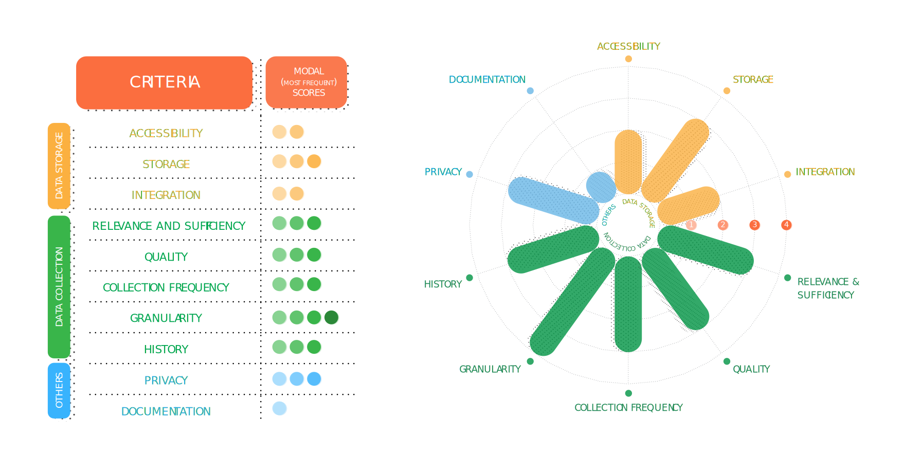

Insights on the underlying local data ecosystem
Insight #5 Civil servants may be hesitant to share data that reflect challenges on the ground.
Incomplete or low-quality data may result from challenges on the ground such as inadequate staffing, low data literacy, or lack of technical support. This causes major delays in publishing data; in some cases, data may be tailored to “look nice.’ Moving forward, a key design question remains: how to create space for the government to work with and be transparent about incomplete data?
The colloquial term စာရင်းမငြိမ် (sa-yinn-ma-nyein) referring to incomplete or unfinalized data literally means “moving records.”

Insight #6 Departments update and maintain highly detailed datasets that are often underutilized due to inaccessibility and poor documentation.
Government departments have a strong culture of frequent, granular data collection as required by regulation and orders from higher-level offices. However, these datasets often sit in their source systems and are not utilized for operations, planning, and management at the local level. Even when departments use data, it is usually in the form of summary statistics in quarterly or annual reports. In this way, departments lose out on the rich insights that might result from in-depth, localized spatial analysis of existing data.
Case Study
Quantifying Data and Tech Readiness
To better understand departments’ readiness for data-driven change, Thibi sampled 7 departments across 3 townships. The sampled departments represent a variety of functions, from security to sanitation. We then used the Data and Tech Readiness Scorecard to assess the readiness of each department to adopt a data-driven tech solution.
Readiness was measured along 10 criteria ranging from data accessibility and storage to granularity and documentation. For each readiness criterion, a department is assigned a score from 1 to 4:
- 1 for “Lagging”
- 2 for “Basic”
- 3 for “Advanced,” and
- 4 for “Leading.”
The table below shows the most commonly occurring score for each criterion (e.g. a modal score of 3 for data integration means that the majority of the 7 sampled departments scored 3’s for data integration). Taken altogether, these most common or modal scores can illustrate the strengths and weaknesses of the 7 sampled departments as shown in the star chart below.

What is the Data and Tech Readiness Scorecard?
The Data and Tech Readiness Scorecard is the core of our scoring process. The scorecard is part of the Data Maturity Framework developed by Dr. Rayid Ghani (Carnegie Mellon University) for an organization’s readiness for data-driven change. [3]
Insight #7 Departments share data on a regular basis, through formal time-consuming channels or unregulated informal ones.
The day-to-day workflows of some departments rely on timely data from other departments. The formal process of data sharing can be time-consuming as letters are passed between and within departments for approval. Mobile phones are used to share data informally – extending from photographed documents to images of blocked drainage pipes. Although more convenient, informally shared data can’t be used for ‘official business.’
How Government data is shared: An Example